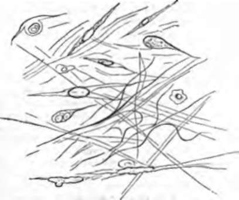

9. The Most Widely Distributed Texture In The Body
Description
This section is from the book "Animal Physiology: The Structure And Functions Of The Human Body", by John Cleland. Also available from Amazon: Animal Physiology, the Structure and Functions of the Human Body.
9. The Most Widely Distributed Texture In The Body
The Most Widely Distributed Texture In The Body is that which is termed connective tissue. It is the substance which connects the integument everywhere with the deeper structures, and it makes partitions between these structures and between the elements of which they are composed. Thus every muscle has a filmy sheath, which, when separated, is seen to consist of a felted white substance, sending in processes into the muscle, dividing its substance into bundles, and these into still smaller bundles by finer investments. The same substance separates the bundles of every nerve, and surrounds the blood-vessels; it is found in great quantity among fat and beneath the integument, and it forms in fact a continuous web in which all the structures throughout the body are imbedded.
This tissue, looked at with the microscope, exhibits two elements: first, a matrix, which, in those places where it is most closely mixed up with other textures, is often homogeneous or nearly so, but which, in the denser specimens obtained from distinct masses, assumes the appearance of extremely fine fibres of indefinite length, disposed in irregular felted fashion, leaving spaces, from which the tissue gets, the name areolar; secondly, nucleated corpuscles, called in this instance connective-tissue-corpuscles.
A drop of dilute acetic acid added to the specimen under the microscope, causes the fibres of the matrix to swell up and become indistinct, bringing the nuclei of the corpuscles clearly into view, and also a variable admixture of isolated fibres on which the acid has no effect. The fibres on which acetic acid has no action are called elastic fibres, and will be further referred to; those which are swollen up by the acid are called while fibres, and constitute the bulk of all white fibrous tissue. White fibres become completely dissolved by prolonged boiling, being converted into gelatin, a nitrogenous substance of simpler chemical constitution than the albuminoids, and characterized by dissolving in hot water and forming a jelly on cooling. Albuminoid textures, on the contrary, are coagulated by boiling; and thus it is that when meat is boiled, the flesh or muscular fibre is hardened, while the connective tissue between the muscular fibres is softened and ultimately dissolved. This cannot be illustrated better than by comparing a raw fish with one which has been cooked. In the raw fish the semi-transparent and comparatively soft segments of muscle are united by firm septa, tough and strong; in the cooked state they are opaque and hard, but fall separate, because the septa dissolve into gelatin.
Fig. 4. Connective Tissue from the Orbit or the Ox, exhibiting corpuscles of various shapes, felted white fibres, and a few slightly curled elastic fibres.
The connective-tissue-corpuscles, being of albuminoid substance, resist boiling, and their examination is sometimes facilitated by that means. They often present a stellate appearance, sending out branches or processes in different directions. In the web of the frog's foot, and in other transparent textures capable of being examined microscopically in living animals, they have been seen not only changing their shape but even moving about, so that they may well be termed amoeboid. In the fine interstices between other tissues, nuclei are often seen in great abundance in homogeneous matrix, without any apparent protoplasm about them.
It may be here mentioned, that to bring delicate textural elements such as connective-tissue-corpuscles into view under the microscope, many niceties of method are resorted to, and among these there are some points which deserve special attention. The material should be perfectly fresh, and not allowed to come in contact with water, as water swells up and destroys delicate corpuscles. Spirit, on the other hand, shrivels textures. By using serum and various weak solutions, these deleterious effects are avoided. Principal among preservative substances, weak solutions of chromic acid and bichromate of potash may be mentioned, to which spirit may be daily added in small quantities. Water added to specimens previously treated with chromic acid no longer destroys the corpuscles. In examining nucleated corpuscles, staining with an ammoniacal solution of carmine is often of the greatest service: the specimen should be washed after being stained, and should then be put up for the microscope in glycerine. Very often the beauty of the specimen is greatly increased by addition, after glycerine, of a little nitric acid. This must, however, be carefully washed away again, before it has had time to destroy the carmine staining.
Continue to: